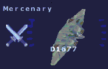

Mercenary RegistryWhen the number of active Military pilots fell below a critical threshold, Quantar hurriedly reinstituted a series of regulations used in the past for a cadre of paramilitary pilots known as "Honor Guard". Octavius and Solrain swiftly followed suit. The Mercenary flight registry, as it it now known, relaxes several key restrictions and permits Mercenary pilots to take up arms against hostile Military pilots, and each other, at will. |
| Registration |
|
To switch your registry to Mercenary, you must be a registered Civilian pilot at any home faction station. Note that, as a temporary measure, the Mercenary registry is accessed by cancelling the Military registry at the enlistment dialog. Rank 9+ and a positive political rating are the only requirements, though a battle-worthy ship and at least minimal combat training with other pilots in the simulator are very highly recommended. At present, a Mercenary pilot may return to Civilian status at any home faction station, at any time. |
| Identification |
|
Targeted Mercenary pilots are marked on the observer's HUD with a traditional bright white crossed-swords emblem.  |
| Regulations |
|